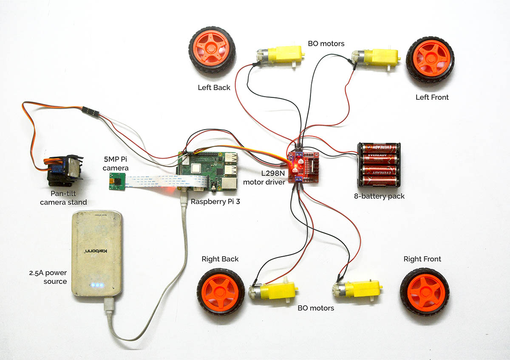

Cardbox vision
An attempt to learn python + fiddling with robotics by replicating a device shown in the 'Rick and morty' TV series. Unfortunately, we had to abandon this project later.
Duration: 4 Weeks(Team of 2) Tools used: Sketchup, PythonAn attempt to learn python + fiddling with robotics by replicating a device shown in the 'Rick and morty' TV series. Unfortunately, we had to abandon this project later.
Duration: 4 Weeks(Team of 2) Tools used: Sketchup, PythonThis project was inspired from ‘Pass the butter’ robot featured in the ‘Rick and Morty’ series(S07E09). We wanted to learn python and work on some project after our daily office routine.
A sample video of our inspiration
Using sketchup to model out the project
We quickly made a simple design mockup using sketchup. We chose to use Raspberry Pi coupled with motor driver, BO motors and a 5MP pi camera combined with pan-tilt camera stand(using servo motor).
The process for code.
For initial attempt, we thought of using a basic cardboard package as a framework. The final objective of the project was to:
The process.
1. Recognise an object
2. Approach closer to the object
3. Pick up the object
4. Return to the origin
Although we could only achieve (1) and (2) points only
Object and color recognition using OpenCV
we also used prebuilt haarcascades classifiers(.XML) to do basic object detection and realtime tracking of our object. Also tried installing tensor flow, but with the limited processing power we could only generate 3-4fps, which wasnt enough for this project. . The basic objective of the prototype was to recognise an object/color/ shape and approach it closer.
By the end, we could successfuly recognize an object /or find the object around, track it and move closer to it .
The end.
What’s left? A lot. We we were a bit more ambitious for our first time, but we had to close the project and leave the city for pursuing other opportunities in our career
Full video, here

 during the pandemic
during the pandemic